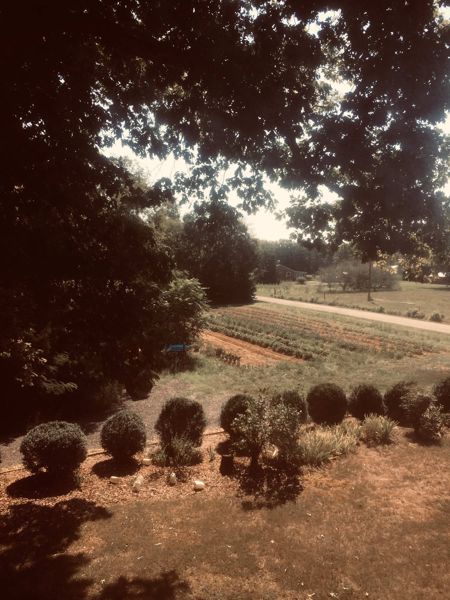
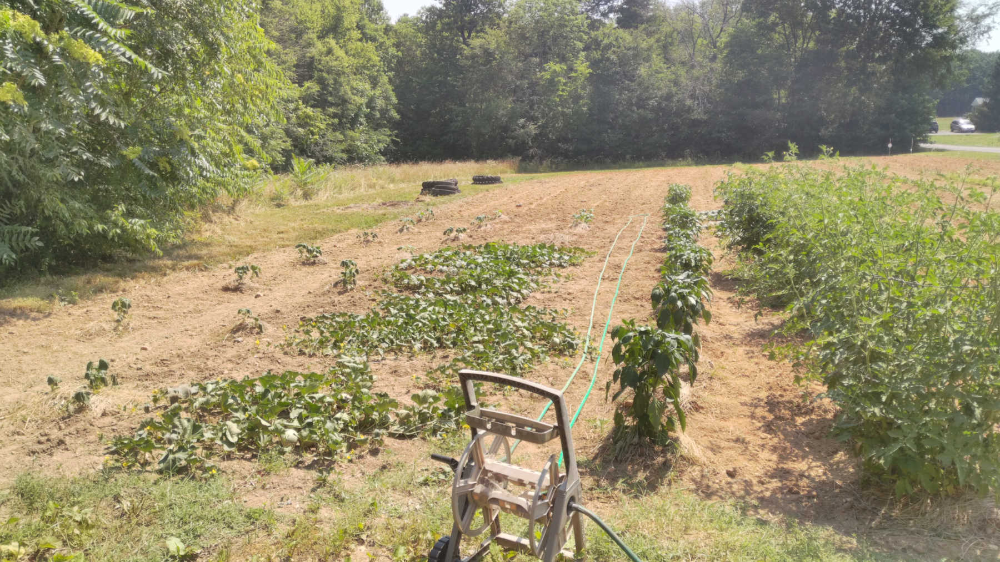

Gardening at Home
The 2020 Pandemic was a good time to garden.

The COVID pandemic had myriad challenges
But one upside of being stuck at home for a year, with unexpected time on my hands, was the opportunity to be intentional about gardening. I grew up helping my father garden, and I've done some on my own in recent years, but 2020 was a year to really get serious about growing my own food.
What do I really want to eat?
Being not only at home, but with the startling fact that sometimes there wasn't food at the grocery stores, I began to think seriously about how to provide for myself. This raised the question: what food do I really want to eat? I'm grateful to live in a place where food security, even during a pandemic, has never really been in doubt, but taking seriously the fact that's not true for everyone changes the way one perceives the substance of each meal.
So, after determining to provide most of my own food, I broke it down into five main groups, and determined what was feasible to grow at home. Grains, fruits, and vegetables were what I could do best, so that was my focus. Meat and dairy require care of animals. And so, while doable, they aren't economical food groups unless you have lot of people to feed. So, they were off they table.
Growing a garden
After determining to focus on grains, vegetables, and fruits, I started actually putting plants in the ground. The first month is all about patience (and watering). Early in the spring, the weeds haven't started growing, and the plants are just taking root. With nowhere else to go, I would check in on the plants each day, watching their gradual growth from a few leaves to differentiating into their own forms.
Soon, though, the weeds came in. The daily work began; keeping the plants alive and healthy, while also keeping the weeds at bay. I grew a wide variety of vegetables: potatoes, onions, carrots in the spring and early summer; tomatoes, peppers, cucumbers, lima beans, and green beans in mid-summer; watermelon, cantelope, okra, and pumpkins in the late summer. As each vegetable came in, I also practiced preserving each one. I canned many of the vegetables, dehydrated pears from a nearby tree, picked and made jelly of wild blackberries, and froze fruits.
It's a meaningful experience to engage with the earth so directly. Not only can you touch the soil, but to also see it bring forth food that can be eaten right out of the garden is magical. I'm grateful to have space at my disposal, but even a single plant can bring joy as you watch a seed sprout, grow, and bear fruit. Especially after a year like 2020 in which humans saw so much broken, it's beautiful to watch nature bring forth such goodness!
A few more pictures...


Learn more about what I do
I'd love to share more ideas and conversations!
Follow Me
© Modern Renaissance